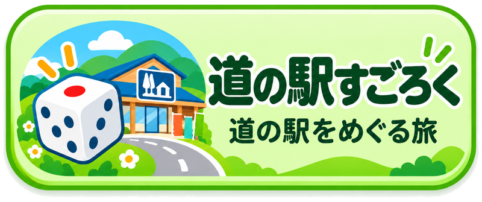
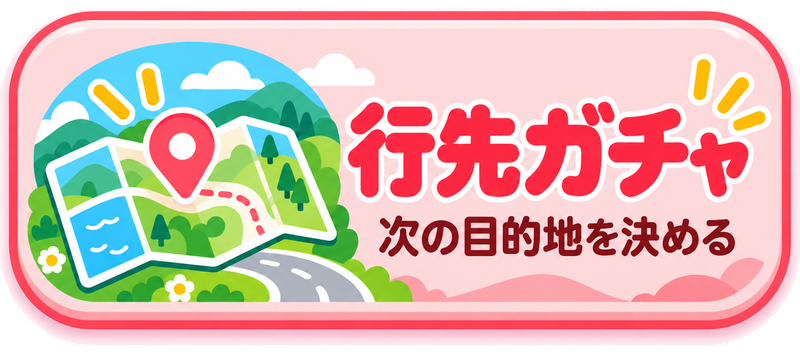
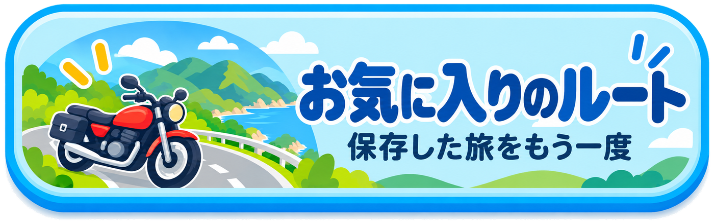

最新版を確認しています…
PWA本体とデータベースを確認中
道の途中。
PWA
Ver1.0.24
気の向くままに、どこかへ行こう。寄り道が、最高の目的地になる。
🏠 ホーム
🎲 道の駅すごろく
🧭 行先ガチャ
🏍️ 乗り継ぎガチャ
🌸 季節を走る
🧩 ここからどこ行く？
🗾 気になる場所
🏍️ お気に入りのルート
旅
の
途中。
●
－ さあ、どこへ行こう？－
PWA Ver1.0.24



ⓘ このアプリについて
📱 インストール方法
✉ 製作者に連絡
更新確認中…
🔄 最新版に更新
🎲 道の駅すごろく
×
📏 目的地までの最大直線距離
50
100
150
200
300
500
km
🛣 目標総走行距離
100
200
300
400
500
km
🎯 立ち寄る道の駅の数
ランダム
1
2
3
4
5
6
🎁 ミッション
あり
なし
※ 距離は地図上の直線距離です。実際の走行距離は道路状況やルートにより増減します。
🎲 すごろく開始！
条件を設定してください。
📍 行先ガチャ
×
📏 目的地までの目安直線距離
10
20
30
50
80
100
150
200
300
km
↔ 距離の許容幅（±）
5
10
20
30
km
✨ 雰囲気
なんでも
海
山
田舎
市街地
ランドマーク
※ 距離は地図上の直線距離です。実際の走行距離は道路状況やルートにより増減します。
🎲 行先ガチャ！
条件を設定してください。
🔗 乗り継ぎガチャ
×
📏 次の移動距離
3
5
10
15
20
30
50
km
🧭 進む方向
北
東
南
西
↑ 北
→ 東
↓ 南
← 西
🎲 次のマスを決める！
スタート地点を設定してください。
🌸 季節を走る
×
🌼 どの季節の景色を探す？
今の季節（自動）
春
夏
秋
冬
📏 最大直線距離
50
100
150
200
300
500
km
※ 距離は地図上の直線距離です。実際の走行距離は道路状況やルートにより増減します。
✨ この条件で季節の候補を見る
🧭 ここからどこ行く？
×
📏 どのくらい先まで行く？
20
30
50
80
100
150
200
300
km
🎯 何を探す？
すべて（道の駅＋定番＋寄り道）
道の駅
定番スポット
寄り道スポット
距離の許容幅は ±10km。距離は抽出用の目安です。
🧭 この条件で探す
🗾 気になる場所
×
県やカテゴリから、ふらっと行ってみたい場所を眺めます。
都道府県
スポット区分
なんでも
道の駅
定番スポット
寄り道スポット
カテゴリ
候補を見る
🏍️ お気に入りのルート
×
最大20件まで保存
選択したコースを削除
← メニューへ
📚 登録スポットを見る
都道府県
区分
すべて
道の駅
定番スポット
寄り道スポット
カテゴリ
名称で絞り込み
表示
×